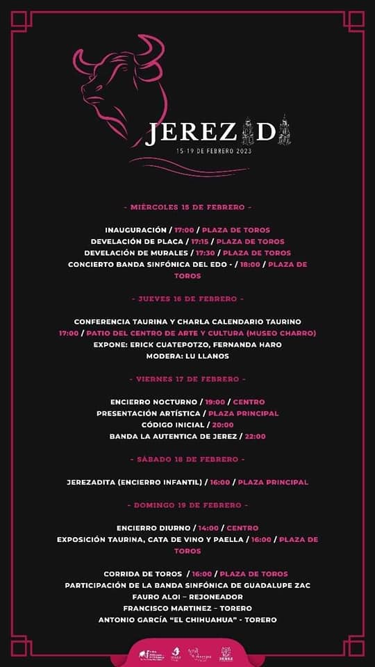
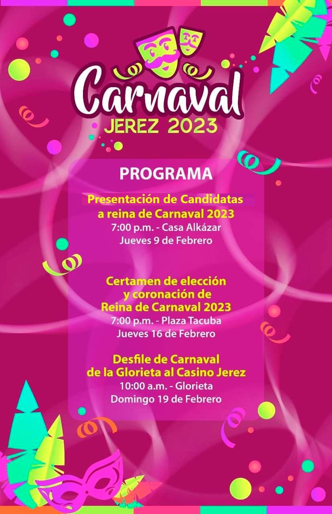

Ya viene la Jerezada 2023, del 15 al 19 de febrero, una festividad repleta de
magníficos actos taurinos para disfrutar en el municipio de Jerez, Zacatecas.
En el mes de febrero prepárate para asistir a una de las mejores fiestas tradicionales
de este pueblo mágico.
En el pasado, las corridas de toros y los bailes tradicionales han estado bien representados
en esta fiesta jerezana. Los asistentes también podrán disfrutar de un completo programa
artístico que incluye conciertos de artistas consagrados y noveles.
Además, cada Jerezada se celebra en la misma época del año, por lo que se ha convertido
en un acontecimiento muy esperado por muchos zacatecanos. Por si fuera poco, lo que
hace único a este evento es la incorporación de otras tradiciones culturales como
las comidas típicas de la región y sus personajes que atrapan la atención de los
visitantes durante horas. En definitiva, la Jerezada 2023 promete ser una fiesta
imperdible que honra la tradición junto a emocionantes novedades.
La Jerezada es una fiesta anual que atrae a multitudes de todo el mundo, que se reúnen
para celebrar la valiente y colorida cultura de las corridas de toros. Con su larga
tradición, los visitantes disfrutan de una combinación única de música, exposiciones
de arte, proyecciones de películas y otras emocionantes actividades que animan las calles.
Pero nada es comparable al encierro por las calles del centro, un acontecimiento para
los más valientes. Prepárate para un gran espectáculo de toros y jaripeo; aunque te
encuentres a kilómetros de distancia, no querrás perderte este acontecimiento.
Programa de la Jerezada 2023

Carnaval 2023

Autoridades municipales y de la Secretaría de Turismo presentaron el programa de
actividades del Carnaval Jerez 2023, que este año cumple 93 años, así como la
tradicional Jerezada, que se realizará del 15 al 19 de enero.
En esta celebración de cuatro días se espera una derrama económica de alrededor
de 4 millones de pesos y una ocupación hotelera de entre 75 y 80 por ciento, de
acuerdo con los últimos datos registrados antes de la pandemia.
En rueda de prensa ofrecida en la capital, encabezada por Le Roy Barragán Ocampo y
el presidente municipal de Jerez de García Salinas, Humberto Salazar Contreras,
se dio a conocer el programa del que será el primer evento del año que se organiza
para promover el turismo e impulsar el desarrollo económico.
La coordinadora municipal de Educación María Esther Ibarra Guzmán, quien será responsable
de la organización del Carnaval de Jerez, resaltó que esta edición cumple 93 años
de realizarse, toda vez que comenzó a presentarse desde 1930, siendo incluso más
antiguo que el de Río Grande, “por lo que estamos muy orgullosos de nuestras raíces”.